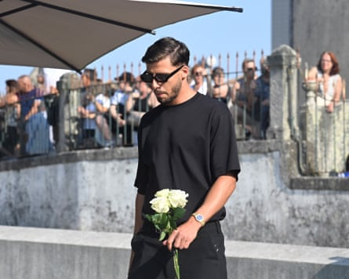

Liverpool players and staff have joined family and friends in Gondomar to pay their final respects to Diogo Jota and his brother André Silva. The funerals are taking place in the brothers’ hometown in Portugal where they were revered with mourners travelling from over the globe to say goodbye.
Jota’s widow, Rute Cardoso, who the footballer had been married to for 11 days before his death, was greeted by family on Saturday morning before the event. The Liverpool head coach, Arne Slot, the captain, Virgil van Dijk, the defender Andrew Robertson, the midfielder Alexis Mac Allister, former teammates Jordan Henderson and James Milner, and Manchester City’s Rúben Dias are all in Portugal for the service.
Rúben Dias arrives for the funerals.Photograph: Miguel Riopa/AFP/Getty Images
Streams of people queued for hours to attend a public wake on Friday in the town at the Capela da Ressurreição. The brothers’ parents were present at the chapel, as were the Portuguese president, Marcelo Rebelo de Sousa, and the prime minister, Luís Montenegro. Jota’s Liverpool teammate Darwin Núñez, as well as international colleagues Bruno Fernandes and Diogo Dalot, who play for Manchester United, and Manchester City’s Bernardo Silva went to the vigil.
Liverpool staff and players arrived in Portugal on Friday after the club chartered a plane. The director of football, Richard Hughes, and the chief executive, Michael Edwards, were among the club officials to join mourners at the chapel for the wake. Van Dijk and Robertson carried floral tributes in the shape of red football shirts, one bearing Jota’s No 20 squad number and Silva’s No 30, as they led the Liverpool players and officials into the church.
Jota and Silva died in the early hours of Thursday morning after their car left the road and burst into flames in Zamora, north-west Spain, while driving towards Santander in order to catch a ferry back to England. Jota had been advised not to fly after treatment for a collapsed lung and decided to travel back for pre-season via the sea.
Outside the Gondomar football ground locals have left scarves, shirts, flowers and mementos to remember the brothers who began playing at the club as children and the academy is named in Jota’s honour. Silva returned to represent the team as an adult before embarking on a professional career in the Portuguese second division.
Arne Slot arrives with Liverpool players and coaching staff.Photograph: Octávio Passos/Getty Images
The collection of tributes at Anfield continued to grow on Saturday as people came to leave their own personal memories, covering a large area outside the stadium.
This story will update